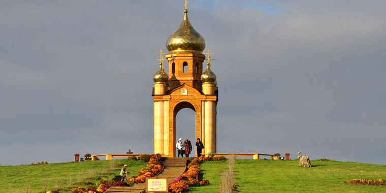
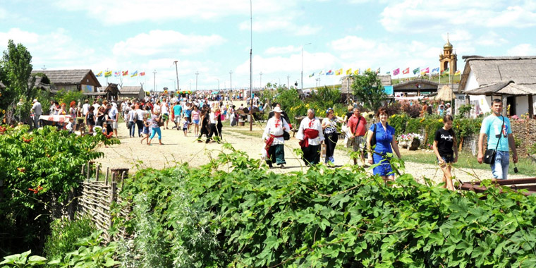
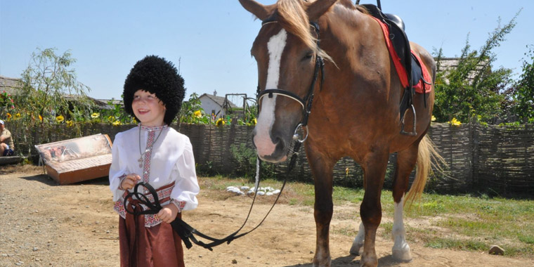
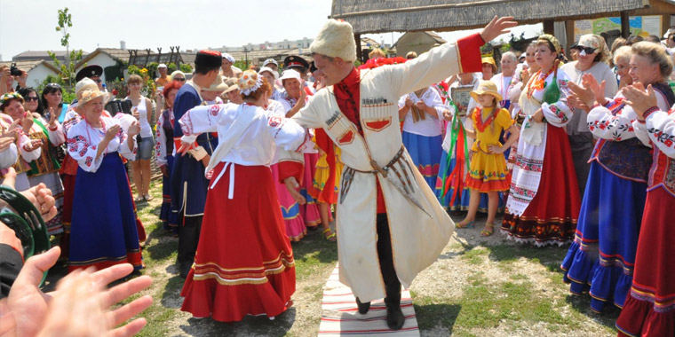
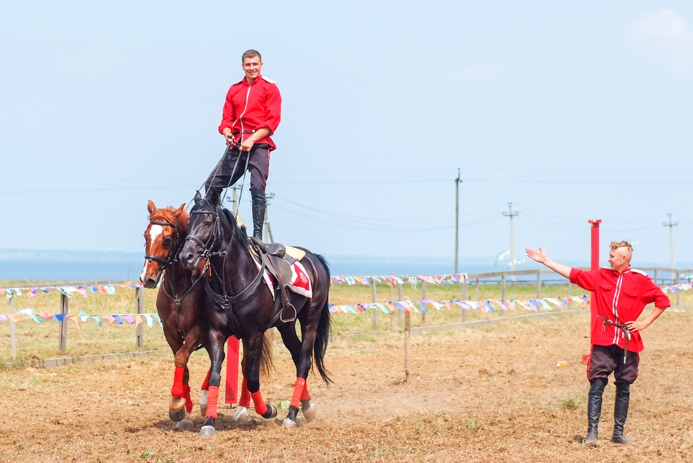

«ВЫСТАВОЧНЫЙ КОМПЛЕКС АТАМАНЬ»
Здесь начинается Кубань…
На крутых берегах Таманского полуострова, что на юге Кубани, сверкает белёными хатами да крышами камышовыми, сказочная станица «Атамань». «Атамань» - это казачья станица в натуральную величину, крупнейший выставочный комплекс под открытым небом. Расположена Атамань на живописном Таманском полуострове, омываемом двумя морями – Черным и Азовским, где 25 августа 1792 года высадились первые казаки - переселенцы из Запорожской Сечи. Без преувеличения можно сказать о том, что именно здесь началась история современной Кубани. Выставочный комплекс «Атамань» расположен на территории некрополя городища «Гермонасса-Тмутаракань», который является памятником археологии и находится под охраной закона Российской Федерации. Постановлением Законодательного Собрания Краснодарского края от 17 декабря 2014 года № 1391 – П ГАУК КК «Выставочный комплекс «Атамань» отнесен к особо ценным объектам культурного достояния Краснодарского края в области традиционной народной культуры.
Этнографическая станица «Атамань» была построена в 2009 году, за короткий срок – 2,5 месяца! В строительстве принимали участие все муниципальные образования, министерства, общественные организации и учреждения Краснодарского края. По задумке, каждое подворье дает посетителям представление о какой-либо теме, связанной с бытом, материальной культурой, ремеслами, фольклором кубанского казачества. Так гуляя по улицам станицы можно зайти в хату пекаря, дымарню, хату лекаря и священника, хату сапожника и цирюльника, постоялый двор, кашеварню, хату пожарного и рыбака. Вместе с внутренним убранством хаты, каждый район Кубани привнес в подворье обычаи, традиции, приметы и легенды, присущие конкретному муниципальному образованию. Хаты построены по современным строительным технологиям, но внешне стилизованы под казачьи жилища конца XVIII — начала XX веков. Подворья станицы являются своеобразными мини-музеями. Главной ценностью выставочного комплекса «Атамань» являются подлинные документы, фотографии, орудия труда, предметы быта конца XVIII — начала XX веков, подаренные жителями Кубани.
Станица «Атамань» - это 48 казачьих подворий, рассказывающих о быте, культуре и обычаях черноморских казаков. Переходя от хаты к хате, вы не только узнаете о старинных профессиях, популярных на Кубани в конце XVIII века, но и самостоятельно постигните азы этих ремесел, ведь в куренях станицы ведут свою работу более 30 площадок различных ремесленных и декоративно-прикладных мастер-классов. Стать на один день гончаром, кузнецом, шорником, ткачем, смастерить обереговую куклу-травницу, из настоящего пчелиного воска изготовить свечу, научиться засолке овощей по кубанским рецептам- все это могут испробовать гости Атамани. Проникнуться историей многонациональной Кубани, увидеть и потрогать предметы быта того времени и постичь исконный казачий колорит вам помогут экскурсоводы выставочного комплекса – настоящие кубанские казаки и казачки. Помимо темы, посвященной истории кубанского казачества, часть музейных экспозиций этно-станицы посвящена богатой истории всего Таманского полуострова в целом». Исторический парк «Гермонасса», тропа Великого Шелкового пути, копия знаменитого на весь мир Тьмутараканского камня, найденного казаками в конце XVIII века при разборке старой крепости в Тамани, и хранящегося в настоящее время в Государственном Эрмитаже, Военная горка, - дают возможность экскурсоводам рассказать посетителям «Атамани» об основных периодах богатейшей истории края. Выставочный комплекс «Атамань» несет в себе просветительские функции, а также укрепляет духовное единство и мир народов Краснодарского края. Вся его деятельность направлена на сохранение и развитие национальных культурных традиций, родного языка, изучения истории, быта народов, населяющих край, возрождение фольклора. Атамань стала объединяющим культурным центром для районов Краснодарского края.
Большое внимание сотрудники «Атамани» уделяют проведению мероприятий, формирующих этнокультурное мировоззрение у детей и молодежи. Особое внимание уделяется мероприятиям, на которых школьники могут закрепить знания, полученные на уроках Кубановедения, а также поближе не только познакомиться с традиционными ремеслами Кубани, но и стать участниками старинных казачьих обрядов, мастер - классов и познавательно- развлекательных программ. Атамань радует гостей кубанскими песнями, народными танцами, конными представлениями, реконструкциями казачьих обрядов и обычаев, играми и массовыми народными гуляньями. Знаменит выставочный компелекс не только в России, но и за ее пределами проведением этнических фольклорных и гастрономических фестивалей: фестиваль вареников "Навары, мылая", фестиваль сала "Гарнэ сальцэ", фестиваль кухни народов Кубани "За общим столом" и многие другие праздники давно полюбились гостям станицы. Визитной карточкой этно-станицы является самобытный фольклорный ансамбль "Атаманочка", ежедневно встречающий гостей на территории комплекса, начиная с основания этнографической станицы. Участники ансамбля собирают старинные казачьи песни, знакомят гостей с ключевыми обрядами жизни казачьей общины : сватовство, свадьба, посвящение в казаки, проводы казака на военную службу. Каждый обряд — это театрализованное представление, в котором могут принять участие посетители комплекса, почувствовать колорит и быт кубанского казачества.
Смачный борщ, копченое сало, голубцы, вкуснейшие разносолы, фирменные вареники с разнообразными начинками, от кубанских хозяек - излюбленные лакомства, которые ежедневно могут отведать гости станицы в хлебосольных харчевнях казачьей станицы. Без сомнения одним из самых зрелищных и любимых гостями станицы мероприятий является конноспортивное представление «Джигитовка». Уникальность представления заключается в том, что через демонстрацию элементов боевой и трюковой джигитовки, выполненных на полном галопе, лихие джигиты знакомят гостей с военной традицией казачества, погружают их в историю доблесных казачьих сражений и долгих военных походов, наглядно демонстрируют владение исконно казачьим оружием: шашкой, пикой и арапником. Элементы высшей школы верховой езды, такие как котильон и конкур, дрессура лошади, прыжки через различные препятствия, аланская езда, – все это гости и жители Кубани могут увидеть только в казачьей станице Атамань. Георгафия посетителей казачьей станицы уже давно охватила весь земной шар. Являясь одним из самых масштабных энографических музеев под открытым небом, Атамань ежегодно принимает гостей из самых разных уголков не только нашей необьятной страны, но и из самых дальних стран. Лишь раз побывав в Атамани, вы уже никогда не сможете ее позабыть и будете возвращаться сюда снова и снова!
